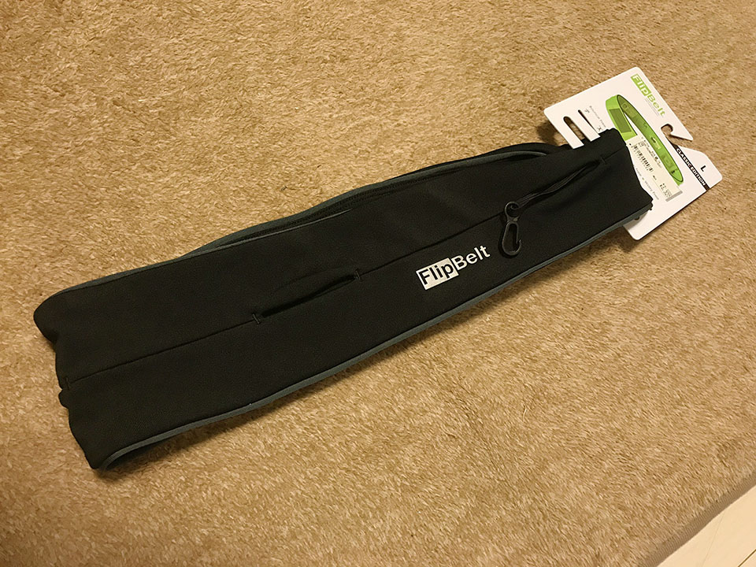

ジョギング時に手ブラになるために FlipBelt を買った
"ランニング用アームバンドやガサガサ揺れるウエストポーチにさようなら！" な商品を見付けたので紹介。

目次
経緯
ダイエットのため、ジムに通うようになったが、同時に外でのジョギングも始めることにした。
しかし、
- 自宅の鍵
- スマホ (iPhone7Plus なので大きめ)
- 小銭
- ペットボトル
- ハンドタオル
などをどのように持ち歩くかで悩んでいた。
マンハッタンポーテージのようなメッセンジャーバッグを斜めがけするのは邪魔臭いし、リュックも変だろう。ということでベルト式のウエストポーチを探してみたのだが、バックルが当たってコレも邪魔臭い。
どれもこんな感じなのか…と諦めかけていたその時、FlipBelt なる商品を発見。見てみるとどこにもバックルがない。何だコレ？

勢いよく買ってみました。

FlipBelt の仕組み
FlipBelt の理屈は簡単で、FlipBelt はただの伸縮性がある輪っか。この輪っかに切れ込みがあり、切れ込みの間からスマホや小銭などを入れられる。
切れ込みにはファスナーなどがないので、「このまんまじゃ間からモノが落ちちゃうのでは？」と思うのだが、心配ご無用。頭からフラフープを通るように FlipBelt を装着してみると、FlipBelt が伸びて身体に密着し、中の荷物が落ちなくなるのだ。
最初はそれでも不安があるが、しっかり密着していて、全くモノが落ちることはない。鍵などのために内部フックも付いているので本当に貴重な物も安心だ。
サイズ展開を要確認！
仕組みとしてはコレだけで、どこにもバックルやファスナーの類がないので、FlipBelt のサイズ調整ができないことに注意。
僕が買ったのは L サイズで、各自の体型に合わせてピッタリなモノを買った方が良い。僕の場合は多分 M サイズだとキツすぎて動きづらかったと思うが、XL を選んだら緩くて落ちていたと思う。
入れたいモノが全部入れられた
この FlipBelt にどのくらいの荷物が入るか試したところ、最初に挙げたアイテムを全て収納できた。すなわち、
- 自宅の鍵 (内部フックに取付)
- スマホ (iPhone7Plus)
- 小銭数枚
- 500ml のペットボトル
- 30cm 四方ぐらいのスポーツ用ハンドタオル
これらを収納し、FlipBelt ごと身体に密着させておけたのだ。
ペットボトルは L サイズだったから入ったのかも。切れ込みの口がギリギリなので、より小さいサイズはどうなるかちょっと分からない。
装着感は全然ない
コレだけモノを詰め込んだら、お腹周りがゆっさゆっさしそうな気もしたが、密着感が強いので、荷物が揺れることがなく、それによって「着けています」感が全然なかった。本当に身体に密着させると、装着感ってなくなるもんなのね…と少し感動した。
荷物に合わせてベルトの位置や向きを調整させて、走っている時の手がポーチに当たらないようにすると、本当に手ブラで走っている感覚だった。
お値段は少し高いが、十分な機能！
FlipBelt は4000円程度で購入した。「ただの輪っか」にしては値が張ったが、他のバックル式のポーチなどを使ってストレスを覚えるより断然良い。
荷物は十分入るし、装着感もない。さらにスウェットなどと同じポリエステル製なので、そのまま洗濯機で丸洗いもできるスグレモノ。
サイズのバリエーションがあるので、心配な人は店頭で確認した方が良いだろう。僕は近所のスポーツ用品店で見付けて買ったので、多分どこにでも売っているとは思う。
ジョギング時の荷物で困っている人は、FlipBelt をぜひ検討してみてほしい。